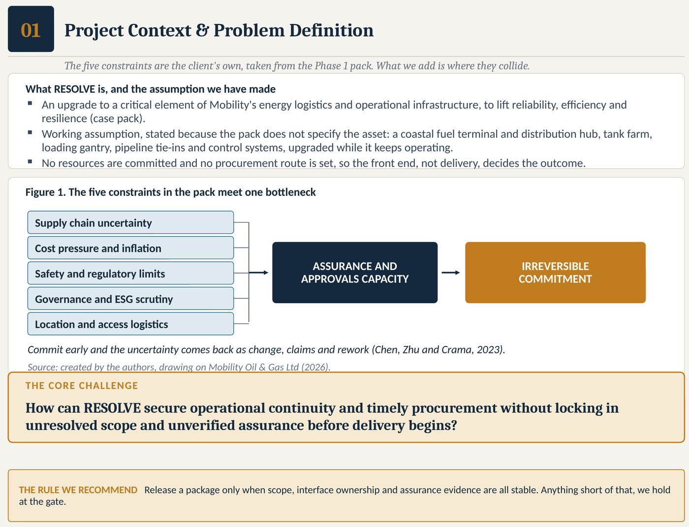
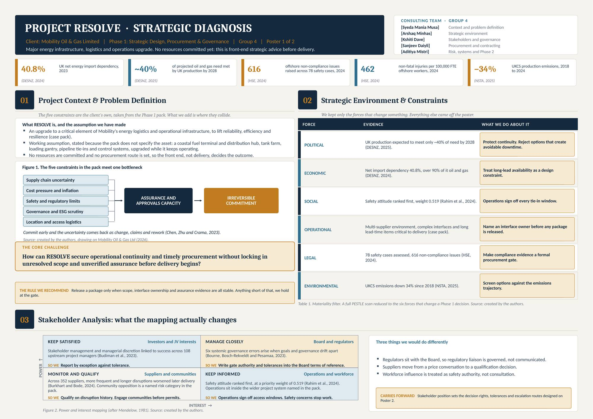
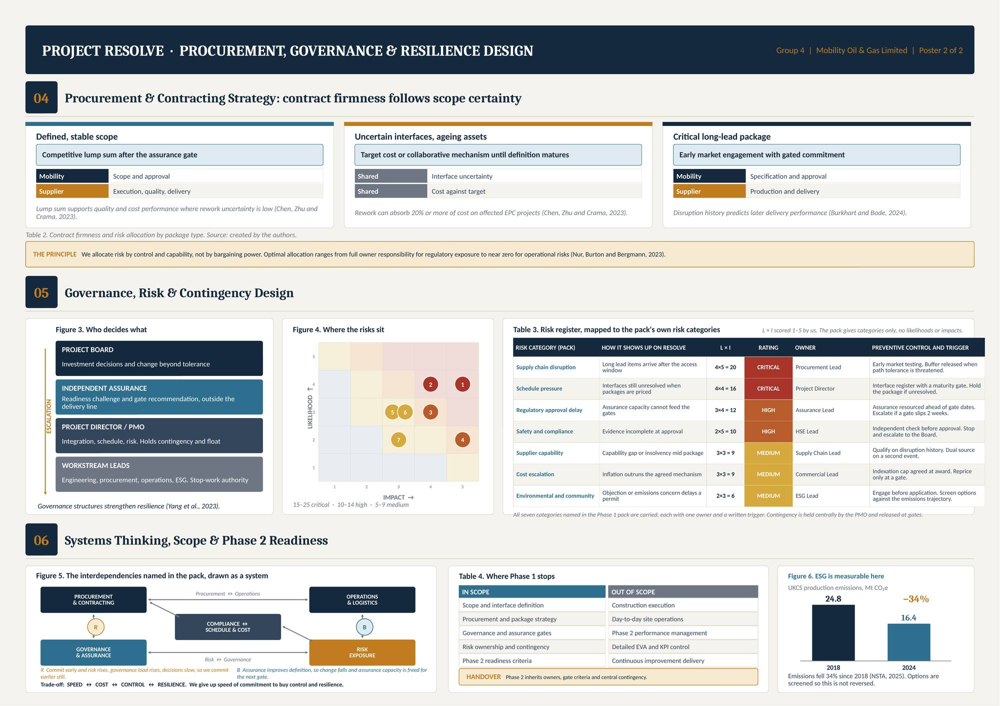
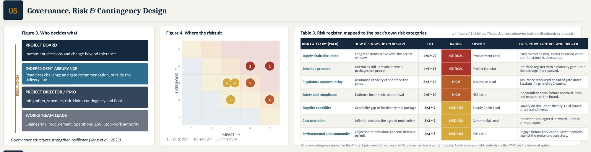
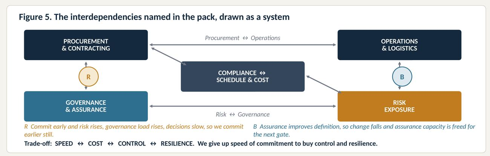

Page 1 of 6. Where my thinking started
When the Month 12 data arrived, what was it really telling us, and what should governance do about it?
This site follows one competency, critical thinking, through two assessments. In Phase 1 my group designed the strategy for a £100m infrastructure upgrade. In Phase 2 I worked alone and tested that design against real delivery data.
My Phase 1 diagnosis E1
- Supply chain uncertainty
- Cost pressure and inflation
- Safety and regulatory limits
- Governance and ESG scrutiny
- Location and access logistics
Commit early and the uncertainty comes back as change, claims and rework (Chen, Zhu and Crama, 2023). Source: Musa et al. (2026).
Why critical thinking, and why here
Facione (1990) describes critical thinking as purposeful, self regulatory judgement that interprets, analyses and evaluates evidence before reaching a conclusion. In project operations, procurement and governance, almost every decision is made from incomplete numbers. Awarding a contract, releasing contingency and escalating an issue all depend on someone reading the data well.
Project RESOLVE upgrades the energy logistics and operational infrastructure of Mobility Oil and Gas Limited, to lift reliability, efficiency and resilience while the asset keeps operating (Mobility Oil and Gas Ltd, 2026). It is a 36 month, £100m programme (Ravensbourne University London, 2026).
My role in Assessment 1 E1
In our five person consulting team, I led the context and problem definition. I did not want to list the five constraints from the case pack one by one. I wanted to show where they collide. My answer was that they all press on one bottleneck: the capacity to assure and approve work before it is committed.
Filtering the environment: only forces that change a decision
Critical thinking began with removing things. A full PESTLE scan produced far more than a poster could hold, so we kept only the six forces that changed a Phase 1 decision.
| Force | Evidence | What we did about it |
|---|---|---|
| Political | UK production expected to meet only about 40% of oil and gas need by 2028 (DESNZ, 2025) | Protect continuity. Reject options that create avoidable downtime. |
| Economic | Net import dependency of 40.8% in 2023 (DESNZ, 2024) | Treat long lead availability as a design constraint. |
| Social | Safety attitude ranked first by the workforce, weight 0.519 (Rahim et al., 2024) | Operations sign off every tie in window. |
| Operational | Multi supplier environment and long lead items (Ravensbourne University London, 2026) | Name an interface owner before any package is released. |
| Legal | 616 non compliance issues across 78 offshore safety cases, and 462 non fatal injuries per 100,000 workers (HSE, 2024) | Make compliance evidence a formal procurement gate. |
| Environmental | UKCS production emissions down 34% between 2018 and 2024 (NSTA, 2025) | Screen options against the emissions trajectory. |
Adapted from Poster 1, Table 1. Source: Musa et al. (2026).

View the full Assessment 1 posters


How to read this site
Every page uses the same chain. I found this the most useful habit I built in this module, so I made it the structure of the site.
Page 2 of 6
The numbers at Month 12 E3
One third of the way through the programme, the project had earned less value than planned and spent more than it earned.
Figure 3. Earned value snapshot. Source: my calculations from Ravensbourne University London (2026).
Cost Performance Index. About 82p of value earned for every £1 spent.
Schedule Performance Index. 88% of planned progress achieved.
Estimate at Completion if current efficiency continues, against a £100m budget.
To Complete Performance Index needed to finish on the original budget.
How I calculated each metric
| Metric | Formula | Value | What it means in plain words |
|---|---|---|---|
| Planned Value (PV) | From data pack | £32m | Work we planned to finish by Month 12 |
| Earned Value (EV) | From data pack | £28m | Work actually finished |
| Actual Cost (AC) | From data pack | £34m | Money actually spent |
| Schedule Variance | EV minus PV | −£4m | Behind plan |
| Cost Variance | EV minus AC | −£6m | Over cost, about 19% of planned value |
| SPI | EV ÷ PV | 0.88 | Progress is slower than planned |
| CPI | EV ÷ AC | 0.82 | Value is leaking on every pound spent |
| EAC | BAC ÷ CPI | ≈£121m | Likely final cost |
| VAC | BAC minus EAC | ≈−£21m | Likely overrun, about 21% |
| TCPI | (BAC minus EV) ÷ (BAC minus AC) | 72 ÷ 66 ≈ 1.09 | A harder target than the trend suggests is achievable |
Source: my calculations from Ravensbourne University London (2026), as presented in Musa (2026), Table 3.
Where the budget sits
| Cost area | Budget | Share of BAC |
|---|---|---|
| Engineering and Design | £12m | 12% |
| Procurement and Contracts | £28m | 28% |
| Construction and Implementation | £45m | 45% |
| Operations Readiness | £8m | 8% |
| Risk and Contingency | £7m | 7% |
| Total (BAC) | £100m | 100% |
Source: Ravensbourne University London (2026); Musa (2026), Table 1.
My first instinct was to report these figures and move on. Structured performance review exists to surface problems before they grow, and a TCPI of 1.09 is exactly that kind of warning (Nalewaik and Mills, 2016). But lagging indices only describe the damage. To decide anything, I needed to know where the value was leaking. That is the next page.
Page 3 of 6
Reading the signals together E4
Cost and schedule indices are lagging indicators. They report what has already happened. I read them beside the leading operational KPIs to find the source (Bang, 2023).
KPI dashboard at Month 12
Dark tick marks the target. Red bar shows the current value.
Figure 4. Source: Ravensbourne University London (2026); Musa (2026), Table 4.
The two leading indicators that had moved furthest both sit inside Work Package 2, Procurement and Supplier Mobilisation. So the slippage is not a general failure of execution. It is a procurement and interface failure.
Why the timing made it worse
Figure 5. Work package timing, drawn by me from Ravensbourne University London (2026).
Work Package 2 overlaps Work Package 3 by design. Packages were being priced and mobilised while interfaces were still moving. Our Phase 1 register had already named this as a critical schedule risk. At Month 12 it was happening.
Resource utilisation: capacity in the wrong places
18 planned, 15 actual
10 planned, 12 actual
14 planned, 11 actual
120 planned, 135 actual
Figure 6. Variance from plan. Source: Ravensbourne University London (2026); Musa (2026), Table 2.
Contractors per supervisor in the plan (120 ÷ 14).
Contractors per supervisor now (135 ÷ 11). The span of control has widened by about 43%. My calculation.
Design capacity is thin while procurement effort has grown. Packages keep recycling through procurement because scope was not stable when released, and under schedule pressure the boundaries between technical and commercial roles drift (Korotkova, Austin and Hetemi, 2024). Supervision has thinned at the same moment a safety incident appeared, in a workforce that ranks safety attitude as its first priority (Rahim et al., 2024; HSE, 2024).
Through a Lean lens I found two wastes. The first is rework. Packages entering procurement before interfaces mature generate rework, which can absorb 20% or more of cost on affected projects (Chen, Zhu and Crama, 2023). The second is a constraint. Adding contractors will not cure a supervision shortage. It will only move the bottleneck.
My decision chain
| The number | What it means | The decision |
|---|---|---|
| CPI 0.82, SPI 0.88 (lagging) | Value is leaking and progress is slow | Find the source before cutting anything |
| Supplier on time delivery 82%, target 95% (leading) | The problem sits in Work Package 2 | Qualify suppliers on disruption history |
| Procurement cycle time 13 weeks, target 10 (leading) | Packages recycle because scope is unstable | Enforce the interface maturity gate |
| Engineers −17%, procurement staff +20% | Design capacity is thin and rework is growing | Resequence, do not add resource everywhere |
| Supervisors −21%, one safety incident | Activity is running ahead of supervision | Restore supervision before construction intensity rises |
The easy answer to a CPI of 0.82 is a cost cut across the board. That would have hit packages that were not causing the problem. The better answer is to resequence procurement behind a firmer interface gate, which matches the procurement strategy we designed in Phase 1 (Theron and Dowden, 2017) and the principle of getting scope right first time (Sammons, 2021).
Page 4 of 6
The trigger that did not fire E5
This page holds the finding I am most proud of, and the one that was hardest to write, because it questions the design my own group created.
What we designed in Phase 1 E2
Who decides what
Governance structures strengthen resilience (Yang et al., 2023). Source: Musa et al. (2026), Figure 3.
Stakeholder position set the decision rights
Power and interest mapping after Mendelow (1981). Source: Musa et al. (2026), Figure 2.
Contract firmness follows scope certainty
| Package type | Contract approach | Who holds the risk | Evidence |
|---|---|---|---|
| Defined, stable scope | Competitive lump sum after the assurance gate | Mobility: scope and approval. Supplier: execution and delivery | Chen, Zhu and Crama (2023) |
| Uncertain interfaces, ageing assets | Target cost or collaborative mechanism until definition matures | Shared | Chen, Zhu and Crama (2023) |
| Critical long lead package | Early market engagement with gated commitment | Mobility: specification. Supplier: production and delivery | Burkhart and Bode (2024) |
We allocated risk by control and capability, not bargaining power (Nur, Burton and Bergmann, 2023). Source: Musa et al. (2026), Table 2.

What I found at Month 12
Cost variance as a share of planned value (£6m ÷ £32m).
Cost tolerance that should trigger escalation to the Steering Committee.
No sign in the data pack that the Steering Committee had been engaged.
| Designed in Phase 1 | Found at Month 12 | |
|---|---|---|
| Escalation | Written triggers and clear decision rights | Tolerance breached more than twice over, no escalation visible Gap |
| Contingency | £7m held centrally, released at gates | Contingency exists, but its trigger discipline has not fired Gap |
| Reporting | Assurance at gates | Calendar led rather than threshold led Weak |
| Structure | Four tier governance with independent assurance | Still structurally sound Holds |
Source: Musa et al. (2026); Ravensbourne University London (2026); Musa (2026), Risk and Governance sections.
Our Phase 1 risks, now live
| Phase 1 risk (our register) | Phase 1 rating | Phase 2 register | Month 12 evidence |
|---|---|---|---|
| Supply chain disruption | Critical 20 | R1 Supplier delivery delay, High and High | On time delivery 82%. Early disruption predicts worse later delivery (Burkhart and Bode, 2024) |
| Schedule pressure from unresolved interfaces | Critical 16 | Seen in WP2 and WP3 overlap | Cycle time 13 weeks |
| Cost escalation | Medium 9 | R2 Cost escalation, Medium and High | CPI 0.82. Impact rose above our estimate |
| Regulatory approval delay | High 12 | R3 Regulatory delay, Low and Medium | Not yet material |
| Not one of the pack's Phase 1 categories | Not rated | R4 Skilled labour shortages, Medium and Medium | Engineers −17%, supervisors −21% |
Source: Musa et al. (2026), Table 3; Ravensbourne University London (2026); Musa (2026), Table 5.
The system behind it
Reinforcing loop from our Phase 1 design. At Month 12 it was running: packages entered construction before interfaces were owned.
Balancing loop. It now needs active reinforcement: resource assurance ahead of the WP3 to WP4 transition.
Optimising procurement speed without considering construction readiness is a classic subsystem trap (Bititci and Spanellis, 2023). Governance and goals drift apart when reporting follows the calendar rather than the exception (Bourne, Bosch-Rekveldt and Pesamaa, 2023), and managerial discretion within the structure is linked to project success in this sector (Budiman et al., 2023).

The contingency existed. The trigger did not fire. Critiquing our own design felt uncomfortable, but it was the most honest conclusion I reached. Effective governance gives an organisation the capacity to decide and act, not a larger volume of reports (Yang et al., 2023). I also noticed a gap in our own register: skilled labour was not among the pack's Phase 1 categories, so we never rated it. In future I will test a register for what it misses, not only rank what it lists.
Page 5 of 6
The Month 14 shock E6
A critical supplier fell into financial distress. I tested each impact against the thresholds and decision rights, one at a time.
Delay on key components. The schedule trigger is 6 weeks.
Cost premium of up to 6% on the £28m package. The Project Manager's authority is £1m.
A change in supplier origin triggers a revised compliance review.
| Impact | Effect | Threshold status | Escalation route |
|---|---|---|---|
| Schedule | +8 weeks on key components | Exceeds 6 week trigger | Steering Committee |
| Cost | ≈£1.68m premium (6% of £28m) | Exceeds £1m PM authority | Steering Committee |
| Compliance | Revised regulatory review | Regulatory matter | Compliance Board |
Source: my analysis of the mid project shock scenario in Ravensbourne University London (2026); Musa (2026), Table 6.
Parallel, not in sequence
Figure 9. Escalation routing, drawn by me.
Risk allocation logic for infrastructure under comparable pressure holds that exposure should sit with whoever can influence the outcome (Nur, Burton and Bergmann, 2023). Here that is Mobility, not the failed supplier. That supports releasing contingency in proportion to the £1.68m exposure, which is exactly what the central £7m contingency was designed for (Kay, 2018). Because frequent and longer disruptions early in a project are linked to worse delivery later (Burkhart and Bode, 2024), dual sourcing should start now rather than after a second event.
Escalating to one body and then the other feels orderly, but it would add weeks to a delay that is already over its limit. Thinking in thresholds rather than in habits made the answer clear.
Page 6 of 6
Decisions and what I learned
Five actions follow from the chain above, in priority order (Musa, 2026).
- Enforce the interface maturity gate before more WP3 packages are pricedAddresses rework, schedule variance and procurement cycle time (Chen, Zhu and Crama, 2023)
- Activate dual sourcing on the critical long lead package nowAddresses R1 and the Month 14 shock (Burkhart and Bode, 2024)
- Restore site supervision to the planned 14Addresses the safety incident and span of control, even if contractor numbers fall (Rahim et al., 2024)
- Escalate to the Steering Committee and Compliance Board in parallelAddresses the governance gap and the shock response
- Move to event triggered assurance reportingA threshold breach starts escalation in the same week (Bourne, Bosch-Rekveldt and Pesamaa, 2023)
Baseline kept within reach if the five actions are taken together and now.
Likely outcome if nothing changes, with the shock compounding into the WP3 to WP4 transition.
What I learned
Fast, intuitive judgement feels complete even when it is not (Kahneman, 2011). I now read lagging indicators beside leading ones before I conclude anything.
A control that exists on paper is not the same as a control that works. I will check whether triggers actually fire, including in designs I helped create.
Number, meaning, decision. Looking back on my work this way is reflection on action (Schön, 1983), and it gives me a method I can repeat.
How feedback changed my work E9
Tutor feedback on my Assessment 2 drafts asked me to apply frameworks more specifically and to close my causal loops. I rebuilt sections so that every finding links back to a cause and forward to a decision. That is why every page here ends with a decision chain.
How I used AI E7
| What I asked AI to do | What I did before using it |
|---|---|
| Help structure my Assessment 2 report | Removed anything not supported by the data pack and rewrote in my own words |
| Check SV, CV, SPI, CPI, EAC, VAC and TCPI | Checked every formula against PV £32m, EV £28m, AC £34m and BAC £100m |
| Improve the clarity of recommendations | Kept the evidence and sources unchanged. The judgements are mine |
Summarised from my signed AI declaration for Assessment 2 (Musa, 2026). AI tools were also used in preparing this site and are declared in my Assessment 3 submission. For me, AI is a second pair of eyes, not the decision maker.
Evidence index
| Ref | Evidence | Where on this site |
|---|---|---|
| E1 | My role and problem definition in Assessment 1 | Page 1 |
| E2 | Phase 1 governance, contract strategy, risk register and systems loops | Page 4 |
| E3 | Earned value calculations and chart | Page 2 |
| E4 | Lagging and leading indicators read together | Page 3 |
| E5 | Phase 1 design tested against Month 12 | Page 4 |
| E6 | Month 14 escalation route | Page 5 |
| E7 | AI use and verification record | This page |
| E8 | This site as the artefact | All pages |
| E9 | How feedback changed my work | This page |
References
Bang, C.G. (2023) Data-Driven Decision-Making for Business. Cham: Springer.
Bititci, U.S. and Spanellis, A. (2023) Systems Thinking for Business and Management: Principles and Practice. Cham: Springer.
Bourne, M., Bosch-Rekveldt, M. and Pesamaa, O. (2023) 'Moving goals and governance in megaprojects', International Journal of Project Management, 41(5), 102486.
Budiman, M.A., Soetjipto, B.W., Kusumastuti, R.D. and Wijanto, S. (2023) 'Organizational agility, dynamic managerial capability, stakeholder management, discretion, and project success: evidence from the upstream oil and gas sectors', Heliyon, 9(9), e19198.
Burkhart, D. and Bode, C. (2024) 'On supplier resilience: how supplier performance, disruption frequency, and disruption duration are interrelated', Journal of Purchasing and Supply Management, 30(3), 100921.
Chen, Z., Zhu, W. and Crama, P. (2023) 'Subcontracting and rework cost sharing in engineering, procurement and construction projects', International Journal of Production Economics, 262, 108901.
Department for Energy Security and Net Zero (DESNZ) (2024) Digest of United Kingdom Energy Statistics 2024. London: DESNZ. Available at: https://assets.publishing.service.gov.uk/media/66a7e14da3c2a28abb50d922/DUKES_2024_Chapters_1-7.pdf (Accessed: 27 August 2026).
Department for Energy Security and Net Zero (DESNZ) (2025) Statutory Security of Supply Report 2025. London: DESNZ. Available at: https://www.gov.uk/government/publications/statutory-security-of-supply-report-2025 (Accessed: 27 August 2026).
Facione, P.A. (1990) Critical Thinking: A Statement of Expert Consensus for Purposes of Educational Assessment and Instruction. Millbrae, CA: The California Academic Press.
Health and Safety Executive (HSE) (2024) Offshore Statistics and Regulatory Activity Report 2024. Bootle: HSE. Available at: https://www.hse.gov.uk/offshore/assets/docs/hsr2024.pdf (Accessed: 27 August 2026).
Kahneman, D. (2011) Thinking, Fast and Slow. London: Allen Lane.
Kay, L. (2018) Collaborative Risk Mitigation Through Construction Planning and Scheduling. Bingley: Emerald Group Publishing.
Korotkova, N., Austin, J.R. and Hetemi, E. (2024) 'Do you know your people? Situated expertise and permeable expertise boundaries in complex project work', International Journal of Project Management, 42(3), 102588.
Mendelow, A. (1981) 'Environmental scanning: the impact of the stakeholder concept', Proceedings of the Second International Conference on Information Systems. Cambridge, MA, pp. 407 to 417.
Mobility Oil and Gas Ltd (2026) Oil and Gas Consultancy, Training and Technical Services. Available at: https://www.mobilityoilandgas.com/ (Accessed: 27 August 2026).
Musa, S.M. (2026) Project RESOLVE Phase 2: Operational Delivery and Performance. Individual consultancy report, PRM25706 Assessment 2. Unpublished. Ravensbourne University London.
Musa, S.M., Minhas, A., Dave, K., Daiyli, S. and Mistri, A. (2026) Project RESOLVE Posters 1 and 2: Strategic Design, Procurement and Governance. PRM25706 Assessment 1. Unpublished. Ravensbourne University London.
Nalewaik, A. and Mills, A. (2016) Project Performance Review. Boca Raton: CRC Press.
North Sea Transition Authority (NSTA) (2025) NSTA Annual Report and Accounts 2024 to 25. London: NSTA. Available at: https://www.gov.uk (Accessed: 27 August 2026).
Nur, S., Burton, B. and Bergmann, A. (2023) 'Evidence on optimal risk allocation models for Indonesian geothermal projects under PPP contracts', Utilities Policy, 81, 101511.
Rahim, H., Dapari, R., Che Dom, N., Kamarudin, N. and Ismail, W. (2024) 'Decoding stakeholder priorities of safety culture preferences in the oil and gas industry', Scientific Reports, 14, 20735.
Ravensbourne University London (2026) PRM25706 Project RESOLVE Phase 1 and Phase 2 Data Packs. Unpublished module material. Ravensbourne University London.
Sammons, P. (2021) Right First Time: Buying and Integrating Advanced Technology for Project Success. Ely: IT Governance Publishing.
Schön, D.A. (1983) The Reflective Practitioner: How Professionals Think in Action. New York: Basic Books.
Theron, C. and Dowden, M. (2017) Strategic Sustainable Procurement. Abingdon: Routledge.
Yang, D., He, Q., Cui, Q. and Hsu, S. (2023) 'Resource and cognitive perspectives: unravelling the influence mechanism of project governance on organizational resilience in infrastructure projects', Buildings, 13(11), 2878.